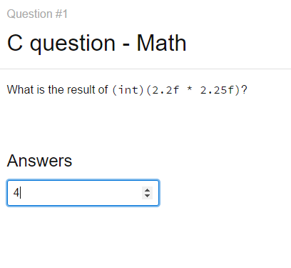
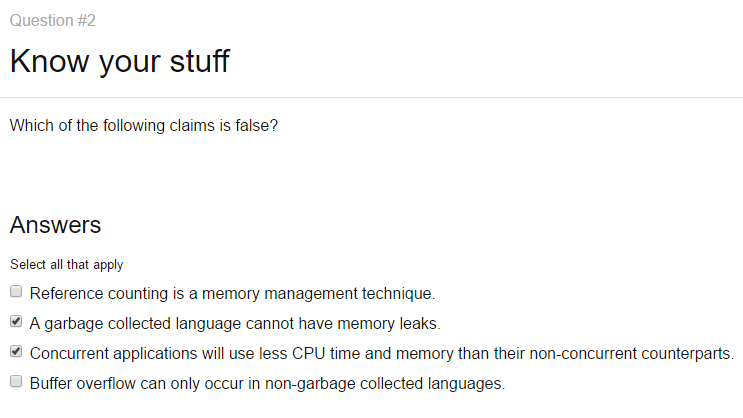
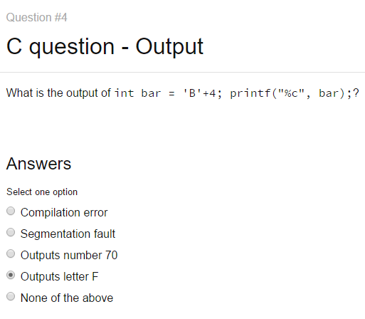
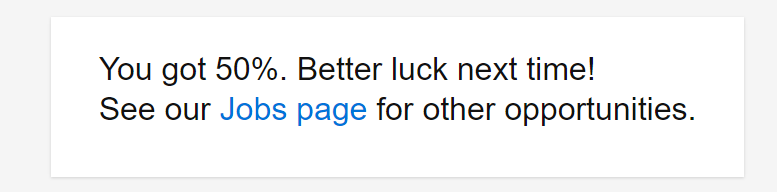
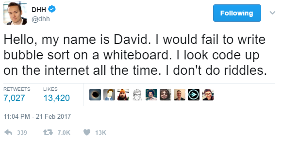
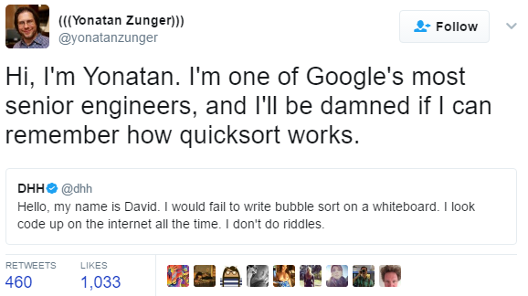

Implementing your hiring process with C trivia
I got a newsletter from Toggl (a time-tracking app) that they are hiring and that they had a coding quiz. I decided to take the quiz just for shits and giggles.
They had two tests I took:
I failed both tests.
First test: backend dev
Here are the questions and my answers:

I later checked this as correct.

I think I got most of those right, except for maybe the concurrency question. Perhaps the question implied that the problem benefits from concurrency, while I was thinking that for non-concurrent problems non-concurrent code definitely uses less CPU and RAM because no context switching and no threading/synchronization overhead is needed.
Buffer overflows are protected by bounds checks, which is not an explicit feature of GC-based languages but practically all of them implement bounds checks, so it might be debatable.

This answer was correct.

This answer was correct.

Somehow I only scored 50 %, even though I think most of my answers were correct.
I was automatically rejected from applying to that job due to the low score.
Second test: applying for C# developer
This test had 20 minutes to finish it, with 9 pages of questions, a code writing assignment and submitting links to your previous work (like GitHub profile).
This test actually had intelligent questions instead of testing you for C pointer trivia.
I think I scored pretty well on the questions (I won’t post them here, since that wasn’t the issue), but the final assignment was to write C# code for this problem:
Given a string, write a C# function that returns the word which occurs more than once first.
For example: input: “If you know the enemy and know yourself you need not fear the results of a hundred battles” output: “know”
I haven’t written C# in ages, so I was really rusty and had to look up syntax and data structures all in that 20 min limit. Considering the time limit and fumbling on C# syntax I think I did ~ok (though I later realized it’s about finding the first word with count=2 instead of finding word with the largest count):
using System.Collections.Generic;
string findMostCommonWord(string str) {
var wordsAndOccurrenceCounts = new Dictionary<string, int>();
string[] words = str.Split(' ');
foreach (string item in words) {
if (!wordsAndOccurrenceCounts.ContainsKey(item)) {
wordsAndOccurrenceCounts[item] = 0;
}
wordsAndOccurrenceCounts[item]++;
}
int maxOccurrences = 0;
string mostCommonWord = "";
foreach (var wordAndOccurrenceCount in wordsAndOccurrenceCounts) {
if (wordAndOccurrenceCount.Value > maxOccurrences) {
mostCommonWord = wordAndOccurrenceCount.Key;
maxOccurrences = wordAndOccurrenceCount.Value;
}
}
return mostCommonWord;
}
Console.WriteLine(findMostCommonWord("If you know the enemy and know yourself you need not fear the results of a hundred battles"));
But the thing is, I managed to finish that coding assignment in time but the time ran out on the last page where I was supposed to produce links to my previous work.
I was disqualified. All that effort was for nothing. I felt so frustrated. The time ran out on a page that shouldn’t have required any time limit, since I was supposed to be thinking which project to showcase as my previous work.
I think they lost a great candidate
At the risk of sounding arrogant, I think I’m fairly knowledgeable with computer stuffs:
- I’m in the process of writing a data backend for a special use case (EventSourcing) that can store infinite amount of data as it automatically archives, compresses and encrypts data to S3. Queries for archived and realtime data is handled totally transparently. The design should be pretty close to horizontal scalability (i.e. infinitely scaleable) - clustering implementation is in the roadmap.
- I can implement and explain write-ahead logging.
- I am up-to-date about container technology. I have even contributed a bug report to Docker.
- I can set up company-internal certification authority.
- I wrote alerting infrastructure (natively pluggable to Prometheus & AWS services) that runs reliably on AWS practically for free.
- I can explain how SSL certificates work.
- I can debug low level TCP issues.
- I can reverse engineer how programs work.
- I understand thread safety issues.
- I have written mission critical production software for the healthcare industry in Finland, and I know it works because if it didn’t, it would cause a shit storm.
- I have written NX (to be open sourced) - plugin-less platform fo browser-native interaction. Use case: automatic printing for browser or scan documents directly to web apps.
- My infrastructure around Docker Swarm detects died&unhealthy containers automatically and assigns them to healthy hosts (self healing infrastructure). Monitoring is automatic (self built bridge tooling) and I have dashboards with graphs about the state of my infrastructure.
- I can setup totally automated loadbalancing for both public services and company-internal services with SSL client cert auth. I have even contributed to Traefik.
- I have used most of AWS’ services like EC2 (compute), S3 (storage), SQS (queue), SNS (webhooks etc.), SES (emails), ECR (Docker images) and Lambda (function as a service), in production.
- I have written printer drivers for specialized thermal printers.
- I have written tooling around Docker Swarm from development to building, testing and deployment to help me run my business.
- I use Yubikey hardware security modules to secure my infrastructure.
- I understand OWASP top10 issues & follow the changing security landscape.
- I have dabbled with machine vision.
- I understand complex-ish technical problems in conjunction with different protocols and can think of solutions.
- I actively contribute to open source.
.. but apparently I’m not qualified to work at Toggl because I’m not familiar with enough C trivia.
Is there any sense in these kind of quizzes?
I think the backend dev questions were an utter failure. The C pointer trivia you could learn on the job if you really had to write C for a living - which would also be a fail in today’s world of much better and safer high-perf languages (e.g. Go etc.).
I think the questions on the C# test were ok, but the time window was too short for a guy who doesn’t know C# enough to just type the solution from muscle memory.
Yes, an argument could be made that they are looking for a developer who already writes C# daily. But is that a wise idea, since most talented developers are more than capable of quickly becoming productive in a language they don’t actively use?
I think it’s far more important to hire a person who has wide ranging knowledge, is genuinely curious to learn and can adapt quickly, instead of scoping the questions to braindead C trivia or a person who writes C# on the daily, but despite all that can still be an incompetent hack.
I think they lost a great candidate by disqualifying me from both positions.
I’ll just leave these here:



Thanks for reading! 😍
If you like my writing, consider following me on Twitter.
Stay updated on my blog posts & projects - sign up for
my newsletter. 🚀
No spam, unsubscribe any time.
RSS also available.